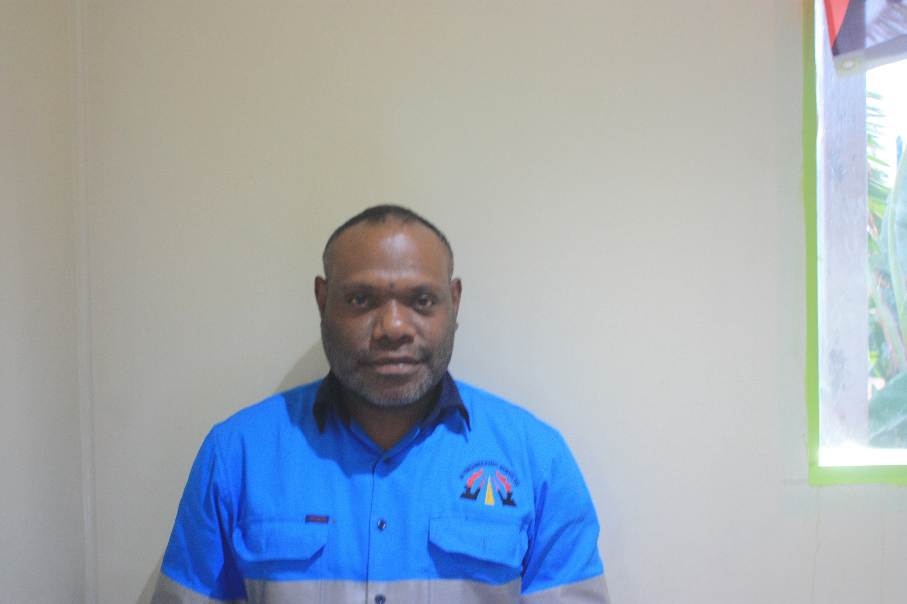

JB Engineering Services
Home
About
Services
Management
DIRECTOR AND MANGAGER.
Director: Jimmy Coppard.

Mr. Jimmy Coppard is the Managing Director & Co-owner for JBES Ltd who is in Business & Marketing by profession. Mr. Coppard has over 10 years of experience working in his respective line of duty.
Mr. Coppard has worked for several years with many Engineering companies including Welgris Fuel Distributors Ltd. He has been in mining industry as a Senior Person, Oil Search Ltd and Corps Security as a Senior CIT Staff.
General Manager: Julian Bosro.

Mr. Julian Bosro is the General Manager & Co-owner for JBES Ltd who is an architectural civil designer by profession. Mr. Bosro has over 12 years of experience working in his respective line of duty.
Mr. Bosro has worked for several years with many Engineering companies including Snowy Mountains Engineering Corporation.Engineering Designs with Construction & Project Management capability attained from working with various organizations.
Our Profession
The professional staff of JBES, under the guidance of the Managing Director, bring together years of engineering experienc throuhout PNG to provide civil and including site investigations, feasibility studies, design, construction supervision and project management.
BREC LTD provides specialist engineering services in the following areas:
Street Lighting Construction & Maintenance
Architectural/CIVIL Design/CADD;
Civil engineering Design and Construction Supervision;
Feasibility studies and Site Analysis;
Maintenance; *Electrical and Plumbing
*Project Management